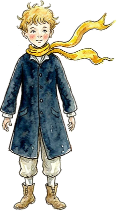

Le Petit Prince
小王子·巴黎与慕尼黑
Two Planets, One Journey — 两颗星球的旅程

在玫瑰色的黎明与黄铜色的暮色之间，小王子造访了两颗星球。巴黎，是梦想家栖居的城市；慕尼黑，是机械与系统运转的行星。点亮罗盘，踏上他的航线。
Once Upon a Business
From Paris to Munich,
from imagination to creation.

在玫瑰色的黎明与黄铜色的暮色之间，小王子造访了两颗星球。巴黎，是梦想家栖居的城市；慕尼黑，是机械与系统运转的行星。点亮罗盘，踏上他的航线。
From Paris to Munich,
from imagination to creation.